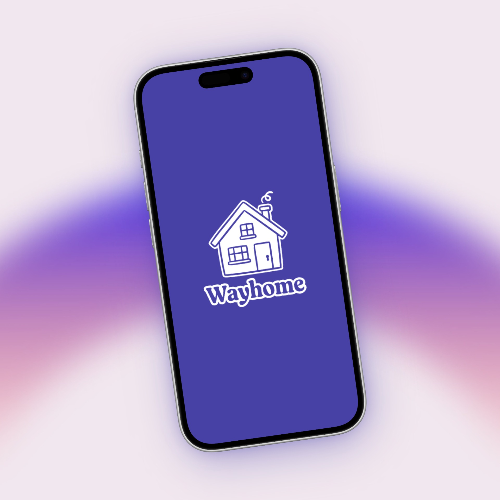
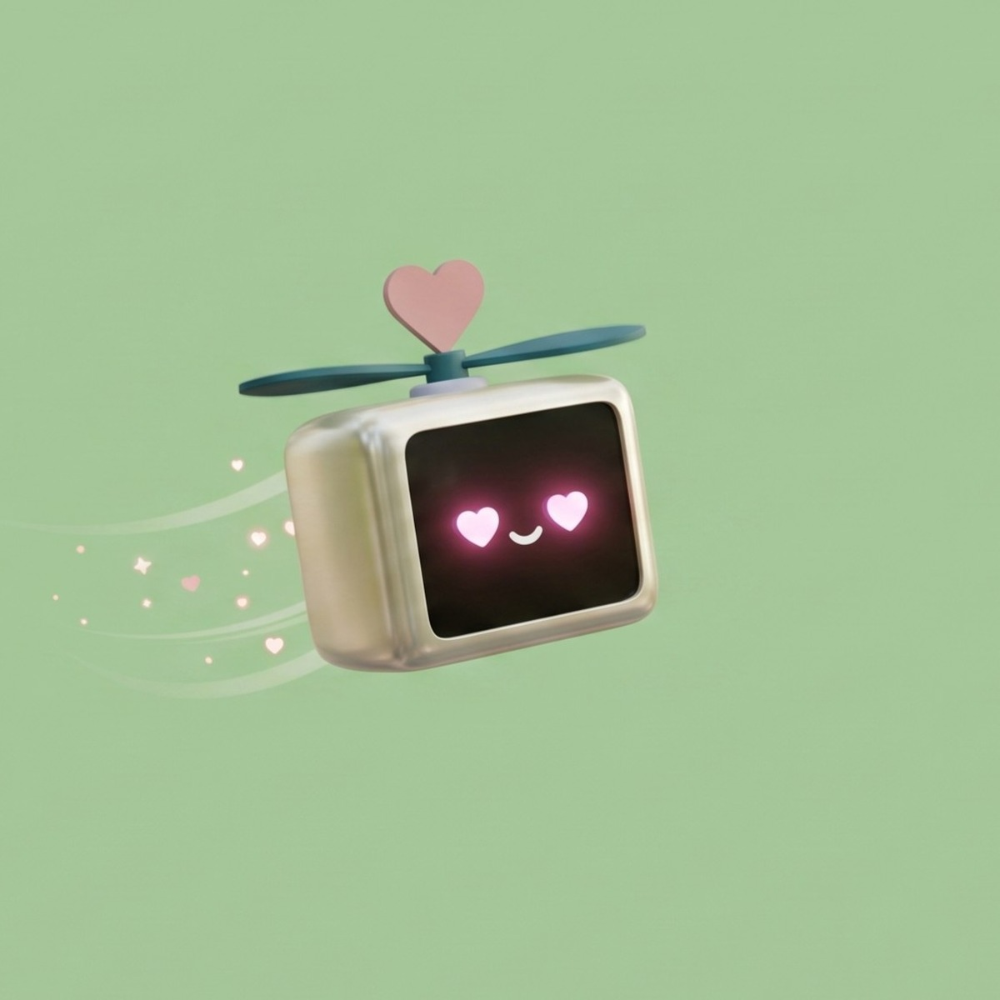
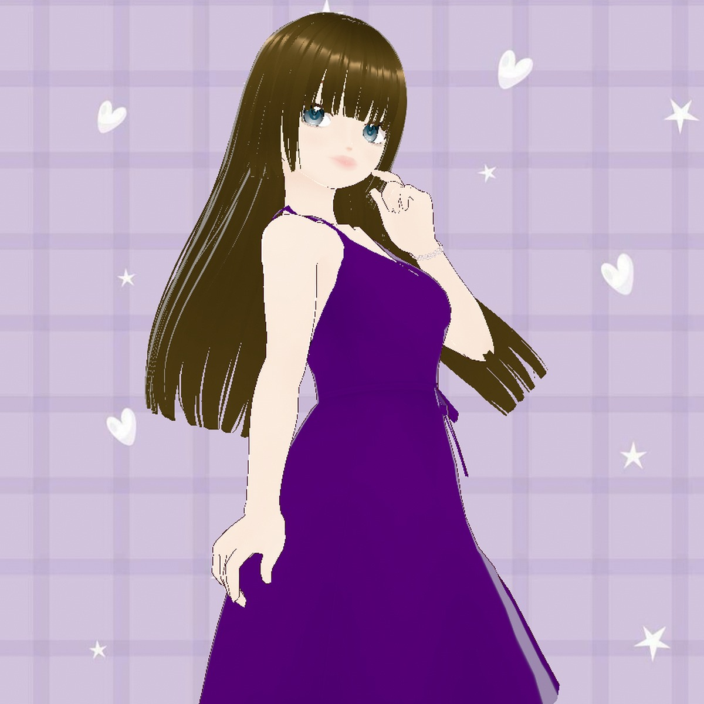
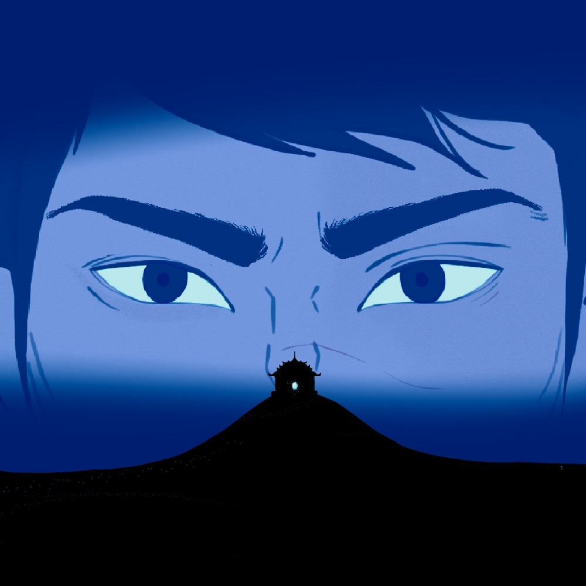

Hi, I’m Irhah I design digital products, immersive worlds, and the stories that hold them.
Explore My Work







Why work with me.
A mix of research, visual design, and spatial work. I switch between them depending on what the project actually needs.
UX/UI & Product
From low-fidelity flows to polished design systems. I prototype quickly and validate with real people before declaring a solution final.
Design Strategy
Framing the right problem first. I align user needs with business goals long before pushing pixels.
Spatial Design
Environmental graphics, signage, and wayfinding for physical venues, paired with immersive VR game environments built in Unity.
Storytelling
Character design, narrative flows, and visual world-building that give complex ideas a relatable voice.
UX Research
Qualitative interviews and usability evaluations. I ground design choices in evidence rather than assumptions.
Illustration
Custom visual assets and brand art that bring human warmth and personality to digital experiences.
What I create,
creates me.
I operate with a deep awareness of output. Growing up in Quetta, Pakistan, my world was small, bounded, and quiet. To make sense of it, I turned to the television screen, watching animation where every single second was drawn with deliberate intention — proving how an entire universe could be built out of play, atmosphere, and light.
It taught me that space is never neutral. When an experience isn’t designed with care, it degrades into noise and chaos. But when every detail is handled with purpose, design becomes a portal into clarity, dignity, and human connection.
Having recently completed my Master’s in Design + Innovation at UW–Madison, I am open to opportunities where I can build digital products and spatial environments. Guided by research and grounded in craft, I aim to create experiences that invite people in, bring order to complexity, and respect the human on the other side.